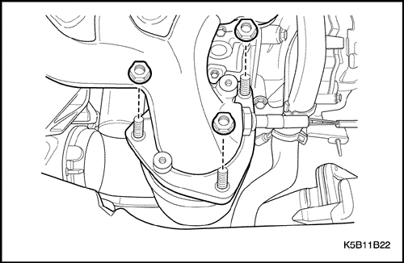

MANTENIMIENTO Y REPARACIÓN
SERVICIO EN EL VEHÍCULO


Conjunto del filtro de aire
Procedimiento de desmontaje
- Desconecte el tubo de admisión de aire del cuerpo del acelerador.
- Retire la abrazadera del tubo de admisión (1).
- Retire el manguito del tubo de admisión (2).
- Desmonte el conjunto de filtro del aire.
- Quite el tornillo del tubo de respiración (3).
- Quite los tornillos de la carcasa del filtro del aire (4).
Procedimiento de montaje
- Para el montaje, repita en orden inverso el procedimiento de desmontaje.
- Coloque los tornillos (1).
Apretar
- Apriete el tornillo del tubo de respiración hasta 7-9 N•m (62-80 lb-pulg.).
- Apriete los tornillos de la carcasa del filtro del aire hasta 7-9•m (62-80 lb-pulg.).
- Conecte la abrazadera del tubo de admisión (2).
- Conecte el tubo de admisión (3).
Elemento del filtro de aire
Procedimiento de desmontaje
- Desmonte la carcasa superior del filtro de aire.
- Retire los tornillos (1).
- Retire la abrazadera del tubo de admisión (2).
- Desmonte el elemento del filtro de aire.
Procedimiento de montaje
- Para el montaje, repita en orden inverso el procedimiento de desmontaje.
- Coloque los tornillos (1).
Apretar
Apriete los tornillos hasta 7-9 N•m (62-80 lb-pulg.).
- Conecte la abrazadera del tubo de admisión (2).
Resonador
Procedimiento de desmontaje
- Desconecte el cable negativo de la batería.
- Desmonte el conjunto del faro del lado derecho. Consulte la sección 9B, Sistemas de alumbrado.
- Desmonte el resonador.
- Quite la tuerca y el tornillo.
Procedimiento de montaje
- Para el montaje, repita en orden inverso el procedimiento de desmontaje.
- Monte el resonador.
Apretar
Apriete la tuerca y el tornillo hasta 5-7 N•m (44-62 lb-pulg.).
Manguito y válvula de ventilación de gases del cárter motor (PCV)
Procedimiento de desmontaje
- Desmonte el manguito de ventilación de gases del cárter motor (PCV).
- Retire el manguito del tubo de admisión (1).
- Retire el manguito de la tapa de la culata (2).
- Retire el manguito inferior del colector de admisión (3).
- Desmonte el manguito de PCV con la válvula (4).
- Desmonte la válvula de PCV.
- Desmonte la válvula de PCV (1).
- Compruebe si el tubo está agrietado, dilatado o dañado.
- Compruebe si el orificio de la válvula de PCV tiene daños (al soplar en la válvula con la boca, el aire debería salir sólo en el sentido de la flecha).

Procedimiento de montaje
- Para el montaje, repita en orden inverso el procedimiento de desmontaje.
Colector de admisión
Procedimiento de desmontaje
- Libere la presión del sistema de combustible. Consulte la Sección 1F, "Controles del motor".
- Desconecte el cable negativo de la batería.
- Desmonte el conjunto de filtro del aire. Consulte "Conjunto del filtro de aire" de esta sección.
- Desconecte el manguito inferior del radiador y extraiga el refrigerante. Consulte la Sección 1D, Sistema de refrigeración del motor.
- Desmonte el conjunto del cuerpo del acelerador. Consulte la Sección 1F, "Controles del motor".
- Desmonte el manguito y la válvula de PCV. Consulte el apartado "Manguito y válvula de PCV" de esta sección.
- Desmonte la válvula de solenoide del cartucho. Consulte la Sección 1F, "Controles del motor".
- Desmonte la rampa de inyectores y el inyector. Consulte la Sección 1F, "Controles del motor".
- Desmonte el sistema EGR. Consulte la Sección 1F, "Controles del motor".
- Desconecte el cable, el conector eléctrico y el tubo de vacío.
- Afloje la tuerca de bloqueo y desconecte el cable del acelerador (1).
- Desenchufe el conector (2) del sensor de presión absoluta del colector de admisión (MAP).
- Retire el tubo de vacío del freno (3).
- Desenchufe el conector (4) del sensor de temperatura del colector de admisión (IAT).
- Desenchufe el conector de DIS (5).
- Retire los cables de encendido (6).
- Desenchufe el conector de IACV (7).
- Desenchufe el conector de TPS (8).
- Desconecte el tubo del solenoide del cartucho (9).
- Desmonte el soporte secundario del colector de admisión.
- Quite el tornillo superior (1).
- Quite la tuerca inferior (2).
- Desmonte el colector de admisión.
- Quite las tuercas (1).
- Desmonte el colector de admisión de la culata (2).
- Retire la junta del colector de admisión.
- Retire del colector de admisión su junta (1).
Importante: Retire la junta con cuidado tirando de su parte superior (a).
- Compruebe si la junta está agrietada, endurecida, dilatada o dañada.
Procedimiento de montaje
- Para el montaje, repita en orden inverso el procedimiento de desmontaje.
- Cuando monte la junta en el colector de admisión, hágalo correctamente.
- Monte el colector de admisión siguiendo el orden numérico de las tuercas.
Apretar
Apriete las tuercas hasta 15-19 N•m (11-14 lb-pie).
Importante: Antes de nada, apriete la tuerca del soporte y después apriete el resto de tuercas.
- Coloque el tornillo/tuerca.
Apretar
- Apriete la tuerca del soporte secundario del colector de admisión hasta 18-22 N•m (13-16 lb-pie) (a).
- Apriete el tornillo del soporte secundario del colector de admisión hasta 18-22 N•m (13-16 lb-pie) (b).
Colector de escape
Procedimiento de desmontaje
Precaución: Precaución: No desmonte el colector de escape cuando las piezas estén calientes.
- Desmonte el conjunto de filtro del aire. Consulte "Conjunto del filtro de aire" de esta sección.
- Desenchufe el conector del sensor de oxígeno (1).
- Retire los cables de encendido (2).
- Desmonte el escudo térmico del colector de escape.
- Retire los tornillos (3).

- Desmonte el convertidor catalítico del colector de escape.
- Desmonte el colector de escape.
- Quite las tuercas y tornillos.
Procedimiento de montaje
- Monte el colector de escape
Apretar
Apriete los tornillos y las tuercas del colector de escape hasta 17-27 N•m (13-20 lb-pie).
- Monte el convertidor catalítico.
Apretar
Apriete las tuercas del convertidor catalítico hasta 35-45 N•m (25-33 lb-pie).
- Monte el escudo térmico del colector de escape.
Apretar
Apriete los tornillos del escudo térmico del colector de escape hasta 8-12 N•m (71-106 lb-pulg.).
Correa de distribución
Procedimiento de desmontaje
- Desconecte el cable negativo de la batería.
- Desmonte el faro derecho. Consulte la sección 9B, Sistemas de alumbrado.
- Desmonte las correas de accionamiento del alternador, del compresor de aire acondicionado y de la dirección asistida, si dispone de la misma.
- Desmonte la tapa superior delantera de la correa de distribución.
- Retire los tornillos (1).
- Desmonte la tapa (2).
- Desmonte la rueda derecha. Consulte la Sección 2E, Neumáticos y ruedas.
- Alinee la marca del piñón del cigüeñal y la del piñón del árbol de levas.
- Utilizando el tornillo de la polea del cigüeñal, haga girar éste en el sentido de las agujas del reloj, hasta que la marca del piñón del árbol de levas quede alineada con la muesca de la base de la tapa trasera de la correa de distribución (1).
- Señale el piñón del árbol de levas (a).
- Muesca en la base de la tapa trasera de la correa de distribución (b).

- Desmonte la polea del cigüeñal.
- Quite el tornillo de la polea del cigüeñal (1).
- Use un destornillador como el del dibujo para quitar el tornillo (a).
- Desmonte la polea del cigüeñal (2).
- Desmonte el tubo guía de la varilla del nivel de aceite y la tapa delantera inferior de la correa de distribución .
- Quite el tornillo (1).
- Desmonte el tubo guía de la varilla del nivel de aceite (2).
- Retire los tornillos (3).
- Desmonte la tapa delantera inferior de la correa de distribución (4).
- Desmonte la correa de distribución.
- Afloje el tornillo del tensor de la correa de distribución (1).
- Desmonte la correa de distribución (2).
Procedimiento de montaje
- Ponga el tornillo del tensor de la correa de distribución.
Apretar
Apriete el tornillo del tensor de la correa de distribución hasta 15-23 N•m (11-17 lb-pie).
- Coloque los tornillos.
Apretar
- Apriete los tornillos (a) de la tapa inferior delantera de la correa de distribución hasta 9-12 N•m (80-106 lb-pulg.).
- Apriete el tornillo (b) del tubo guía de la varilla del nivel aceite hasta 9-12 N•m (80-106 lb-pulg.).
- Apriete los tornillos (c) de la tapa superior delantera de la correa de distribución hasta 9-12 N•m (80-106 lb-pulg.).
- Coloque el tornillo de la polea del cigüeñal.
- Use un destornillador como el del dibujo para poner el tornillo (1).
Apretar
Apriete el tornillo (a) de la polea del cigüeñal hasta 65-75 N•m (48-55 lb-pie).
Cárter del aceite
Procedimiento de desmontaje
- Vacíe el aceite del cárter motor.
- Desmonte el plato inferior del cárter del embrague.
- Retire los tornillos (1).
- Desmonte el plato inferior del cárter del embrague (2).
- Desmonte el cárter del aceite.
- Quite las tuercas y tornillos (1).
- Desmonte el cárter del aceite del bloque del motor (2).
- Limpie superficies de estanqueidad del bloque del motor y el cárter del aceite.
- Limpie los tornillos del cárter del aceite.
- Limpie los taladros de los tornillos del cárter de aceite en el bloque del motor.
Procedimiento de montaje
- Para el montaje, repita en orden inverso el procedimiento de desmontaje.
Importante: Una vez aplicada junta líquida al cárter del aceite, monte el cárter antes de 5 minutos.
- Coloque los tornillos y las tuercas.
Apretar
- Apriete los tornillos y tuercas (a) del cárter del aceite hasta 9-12 N•m (80-106 lb-pulg.).
- Apriete los tornillos (b) del plato inferior del cárter del embrague hasta 4-7 N•m (35-62 lb-pulg.).
| © Copyright Chevrolet Europe. Reservados todos los derechos |